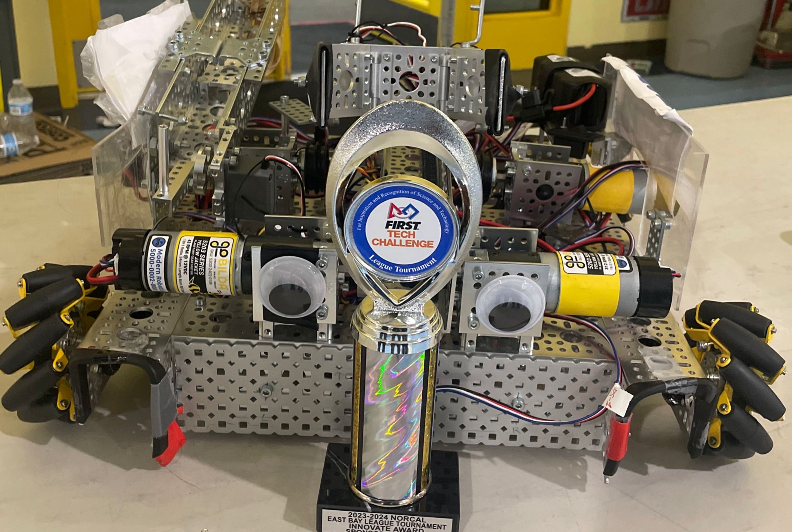

Our rookie year of designing, building, and competing in FIRST Tech Challenge's Centerstage challenge.
Our centerstage bot consisted of a bevel gear driven 4 wheel mecanum channel based drivetrain, as well as a robotic arm. Our robotic arm was used as our intake and outake. The base was a direct drive using a 43 rpm dc motor, and on the opposite side of that was a 312 rpm motor chained to a gear at the top of the base channel, attaching to another channel for the second stage. Our claw was a 2 servo driven omni directional claw which efficiently picked up pixels from above. For drone launching we used the stock design from gobuilda, but modified it to put the servo on the chassis and pull the rubberband farther back, in order to shot with much more force. Our lift system was 2, 60 rpm motors in the middle left, and middle right of our chassis. They attached with fishing line to 2 hooks mounted on the arm. When we wanted to lift our arm would raise much higher than for scoring and we would hook onto the truss.

For Centerstage we implemented PIDF concepts to control and stabalize our arm as well as a distance sensor to detect our team prop and based on where our team prop was in autonomous we would preform different pre-programmed tasks. We also learned how to code properly using finate state machines, git, and object orientated proamming.
Season was announced, game rules was released, and we started to design our new robot
Since this year was our rookie year it was a very new experience for us but we were able to meet a lot of teams and learn what they do, as well as compete in matches. We went to win most of our matches played at these league meets and preformed really well for a rookie team.
Despite our efforts, we were unable to make it to playoffs but we thankfully won the Innovate Award as well as Think Award 2nd Place
This was our team's first ever off-season event and we were able to get in touch with a lot more teams, learn their process behind engineering, and show off our improvements we had made on our robot since offseason began. We competed in the semifinals before losing two times.
This year, our rookie year, we learned how to design, build, and code a robot. We also learned how to work as a team and meet deadlines, as well as becoming expert engineers.
We have learned how to tackle different problems in FTC, whether it was on the software, mechanical, or design aspect of FTC. We learned that we need to improve our design process, learn how to make custom designs, and expand on our coding knowledge and implement different kids of sensors.